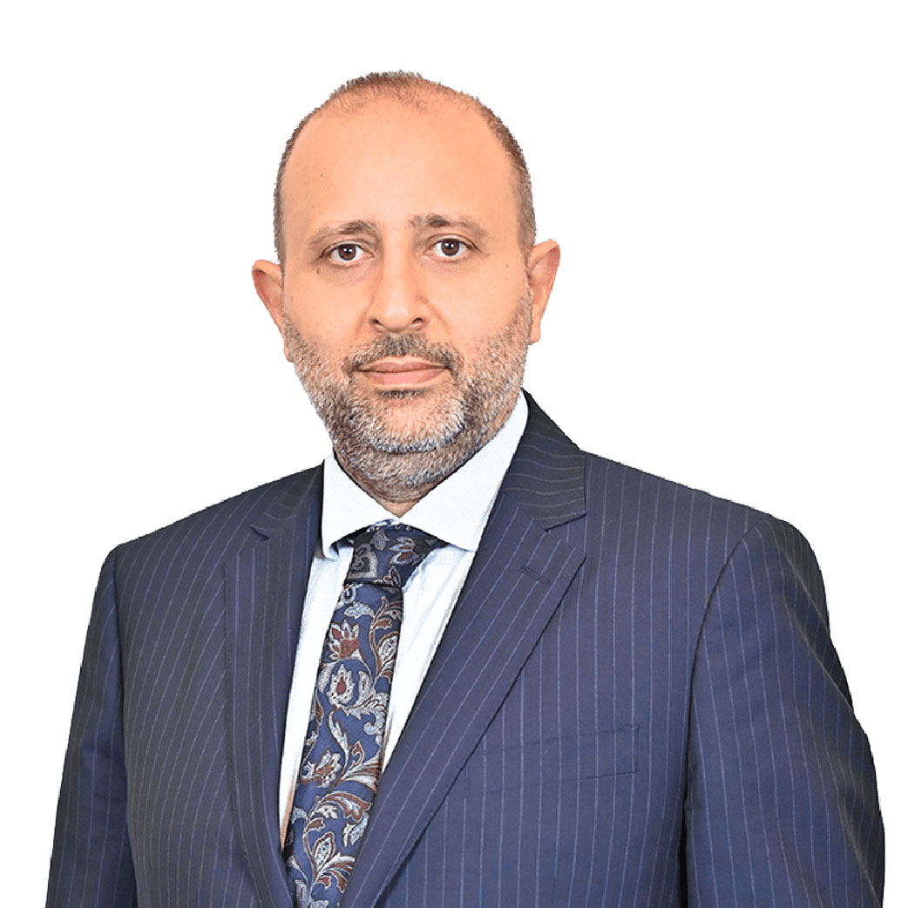
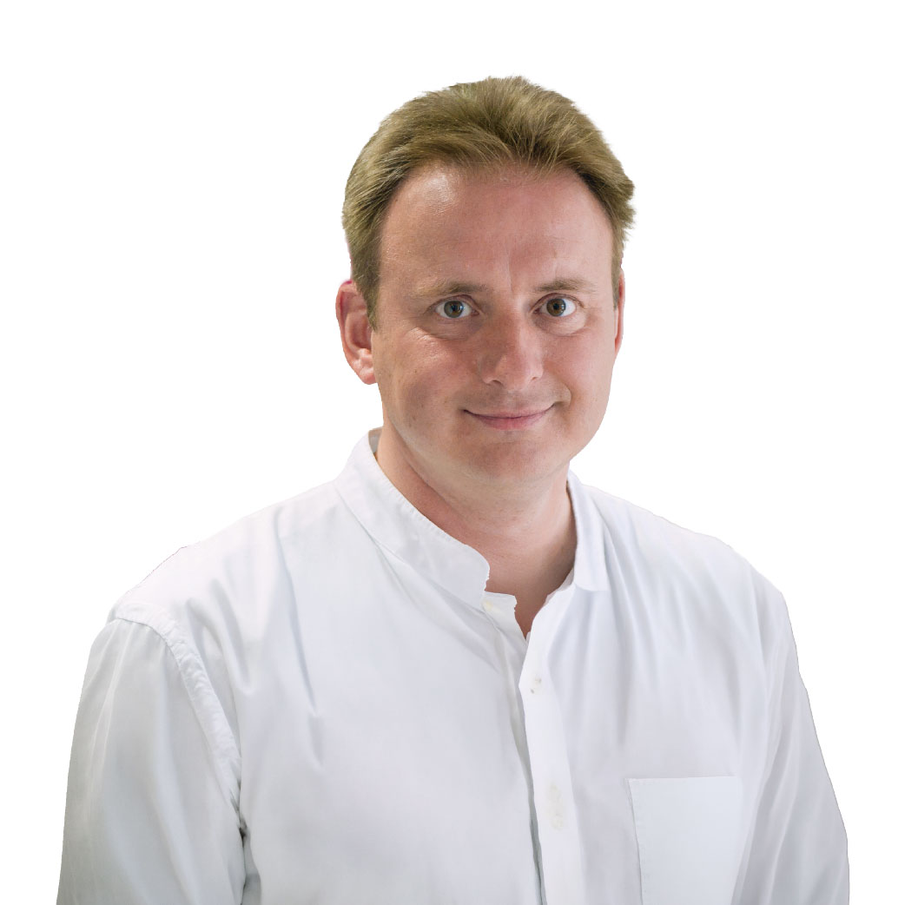
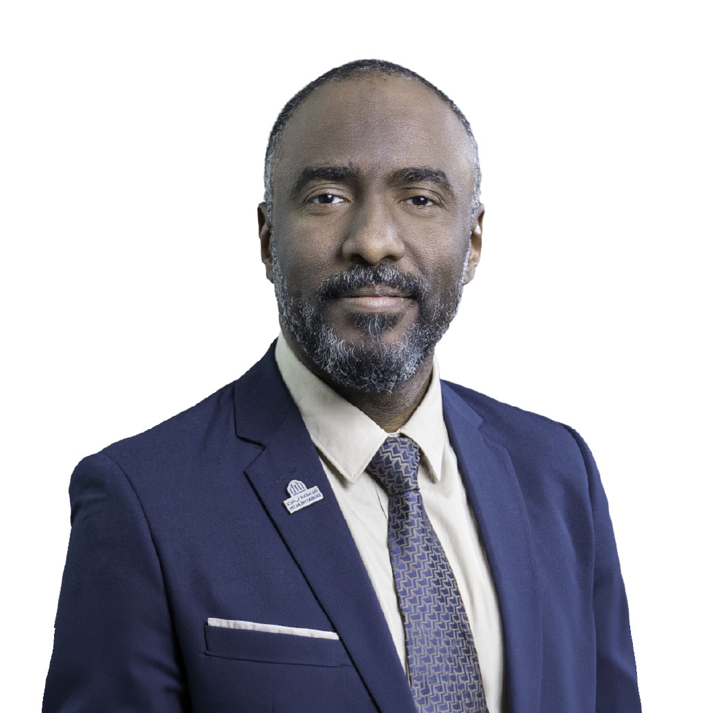
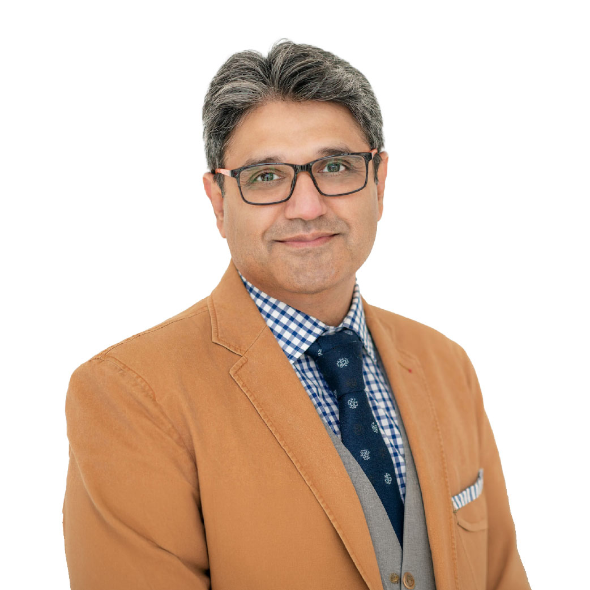

Virtual Scientific Program · For healthcare professionals
MASH in Focus Integrating Metabolic and Hepatic Care in the UAE
A multidisciplinary scientific program on early identification and integrated management of MASH.
About the program
An integrated view of MASH care, from screening to advanced therapy
This is a virtual scientific program focused on MASH (Metabolic Dysfunction-Associated Steatohepatitis), highlighting early identification and integrated care across metabolic and hepatic specialties. The session brings together leading experts to discuss screening, risk stratification, and emerging management approaches. The event combines expert lectures, live engagement, and panel discussion to deliver practical, multidisciplinary insights.
-
Who to screen, how to screen
Practical guidance on identifying high-risk patients and using non-invasive assessment.
-
Advancing MASH care
Management strategies and emerging evidence, with a faculty panel discussion.
Faculty
Speakers
-

Chairperson
Dr. Ahmad Al-Rifai
MD, MA, MRCP
Consultant Hepatologist / Gastroenterologist,
Sheikh Shakhbout Medical City, Abu Dhabi, UAE -

Prof. Matthias Blüher
MD
Professor of Obesity Medicine; Director, Helmholtz Institute for Metabolism, Obesity and Vasculature Research, Helmholtz Center Munich and University of Leipzig, Germany
-
Prof. Jörn M. Schattenberg
MD
Professor of Medicine and Director, Department of Medicine II, Saarland University Medical Center, Homburg, and the University of the Saarland, Germany
-

Dr. Elamin Abdelgadir
MD
Associate Professor of Endocrinology, Mohamed Bin Rashid University of Medicine and Health Sciences; Consultant Endocrinologist, Dubai Hospital, Dubai, UAE
-

Dr. Farooq Khan
MD, FRCP, MRCP
Consultant Transplant Hepatologist, Gastroenterologist & Interventional Endoscopist, King's College Hospital London, Dubai, UAE
Scientific program
Agenda
-
06:00 – 06:10
Welcome Note
Venkat Kalyan
MASH Today: Burden, Diagnosis, and Clinical Reality
-
06:10 – 06:15
Introduction to scientific session
Dr. Ahmad Al-Rifai
-
06:15 – 06:35
MASH as a metabolic disease
"Who to screen, how to screen, and when to refer"
Prof. Matthias Blüher
-
06:35 – 06:55
Risk Stratification in MASH
"Disease Progression and Non‑Invasive Assessment"
Prof. Jörn Schattenberg
-
06:55 – 07:05
High‑Risk MASH in UAE Metabolic Clinics
"Is It Any Different?"
Dr. Elamin Abdelgadir
-
07:05 – 07:15
Break
Advancing MASH Care
-
07:15 – 07:25
The Cost of Inaction
"Economic and Healthcare Burden of MASH in the UAE"
Dr. Farooq Khan
-
07:25 – 07:45
Advancing MASH Care
"Management Strategies and Emerging Evidence"
Prof. Jörn Schattenberg
-
07:45 – 08:10
Panel Discussion
"Integrating Metabolic and Hepatic Care: Practical Pathways for the UAE"
Faculty
-
08:10 – 08:15
Closing Remarks
"Key takeaways from the meeting"
Dr. Ahmad Al-Rifai
Reserve your seat
Join the conversation on MASH care in the UAE
Open to healthcare professionals. The session is delivered virtually — register to receive the joining link.